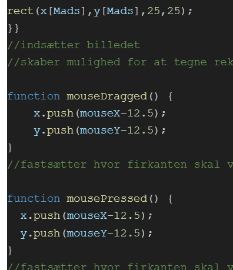

Vi skulle udvikle et program der kan 2 ting: Redigere et billede ved manipulation på pixelniveau og tilføje effekt.
Vi startede med de teoretiske overvejelser, og overvejede hvordan vi ville manipulere et billede.
Udfra de programmer MP havde allerede givet til os valgte vi at ved at ændre på musen's lokation ville farverne på billedet ændre sig.
Dette var fordi der var et program hvor et billedes pixelværdi ændrer sig ved musen's bevægelse og et andet program hvor der blev manipuleret ved farvene men det var statisk. Så vi ville kombinere dem.
Vi valgte derfor hvilke billede vi ville ændre på og endte med dette, som er et billede af vores ven som Chat GPT har lavet om til en tegneserie.
Efter at have fundet vores billede brugt vi lidt tid på at sætte det ind korrekt, men derefter kunne det rigtige begynde.
Vi valgte at jo mere højre vores mus var på billedet, jo mere intesent vil den røde del af alle pixels på billedet blive. Derefter valgte vi at jo længere ned musen var mere grøn blev de.
Efter vi havde implementeret dette fik vi noget feedback da andre prøvede og bruge det, hvor mange mente at de kunne være interessant at kunne tegne oven på billedet. Hvilket vi kan så på dette billede:

Her er det muligt at se de funktioner vi bruger til at både at vedligholde at en firkant bliver tegnet når der trykkes og at der bliver tegnet flere hvis man "dragger" musen rundt mens man holder musen nede.
Det er altså mouse x og y der er vores koordinater hvorefter vi indsætter en rectangle altså firkant.